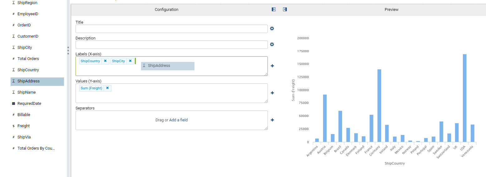
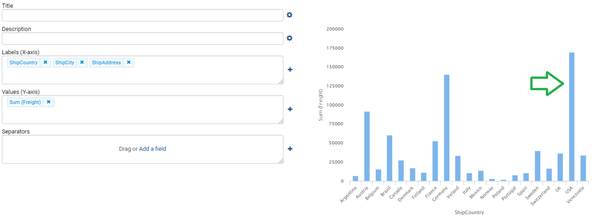
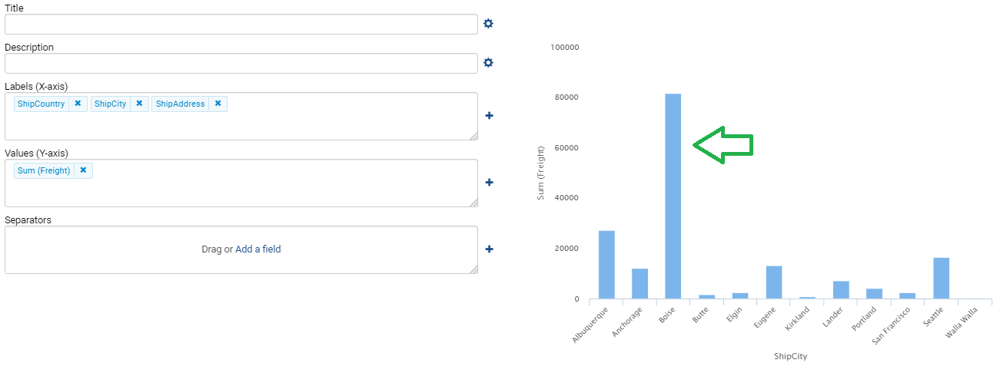
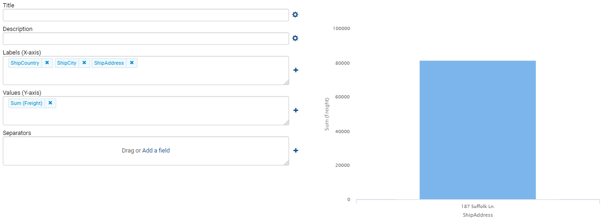

Drill Downs¶
Drill downs in Izenda are utilized to dive into subsets of information within a single report.
Navigating between reports can be accomplished by using Subreports.
Creating A Drill Down¶
- Drill downs can easily be created by adding multiple fields to the labels portion of the report designer. This indicates to Izenda the fields on the left can be partitioned by the fields to the right.

Fig. 373 Adding Fields to Report
- To utilize the drill down, click on a column, such as USA. Doing so will render the next level partitioned data of ShipCity by the selected ShipCountry.

Fig. 374 Top Level Drill Down
- For the next data level down, all Cities inside the USA are rendered on the x-axis of our report. The y-axis values scales down corresponding to the smaller Freight values present at each City.
- To contiune drilling down, click a column, such as Boise.

Fig. 375 Second Level Drill Down
- Upon clicking the Boise field, the final level of the drill down is displayed. All available Addresses for Boise are rendered on the x-axis of our report.

Fig. 376 Third Level Drill Down
Other Drill Down Chart Types¶
Drill downs function similarly for other Chart report part types. Clicking on the space or point representing the data will navigate to a lower level of data.
Drill downs are also available for:
- Line
- Column
- Bar
- Area
- Pie
- Funnel
- Combination
- Tree